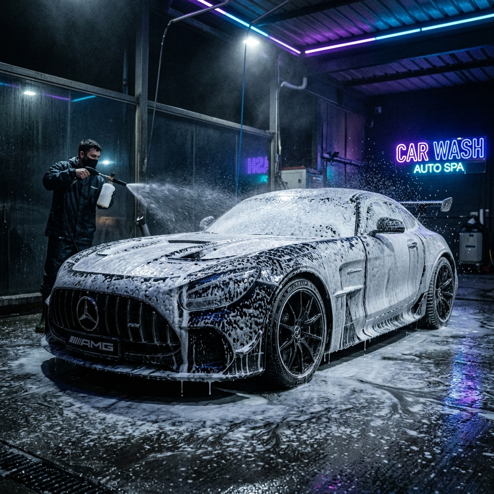
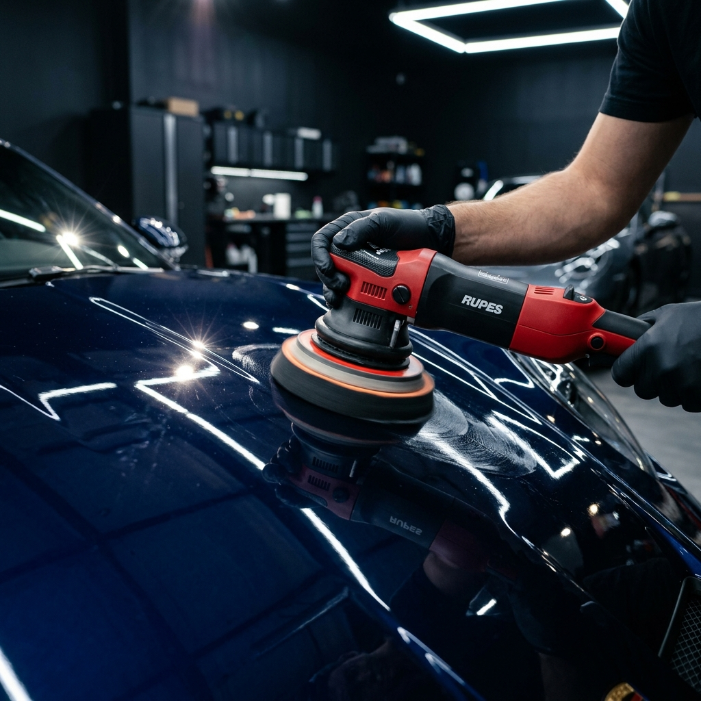
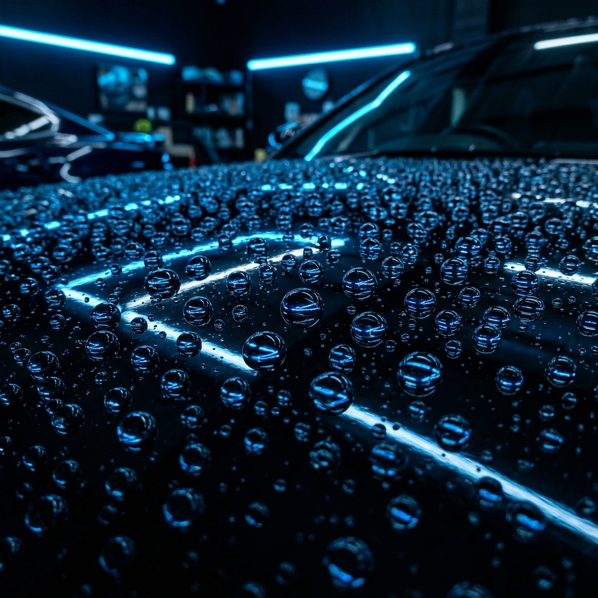
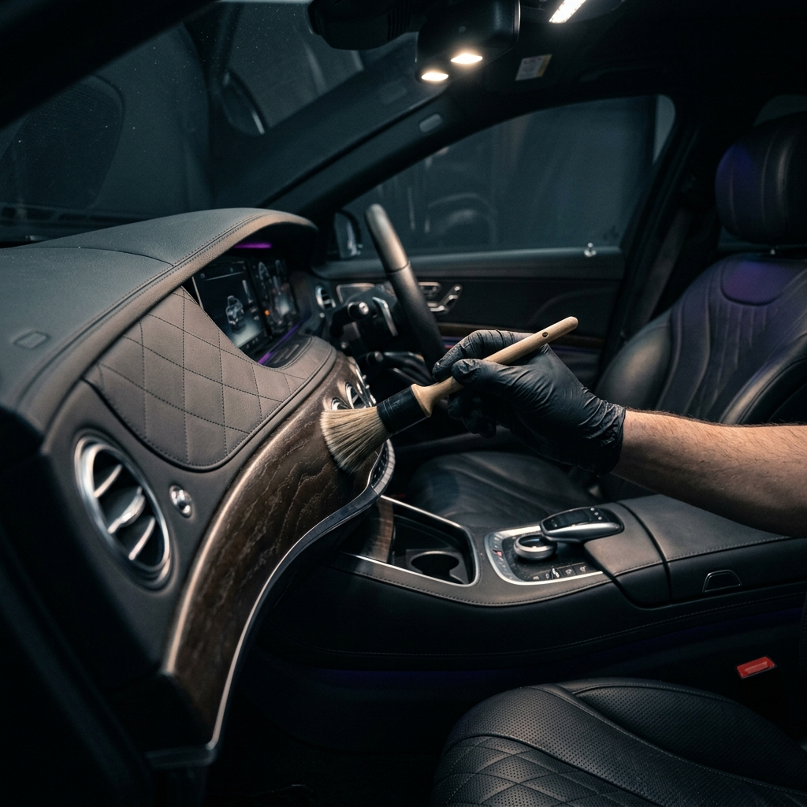
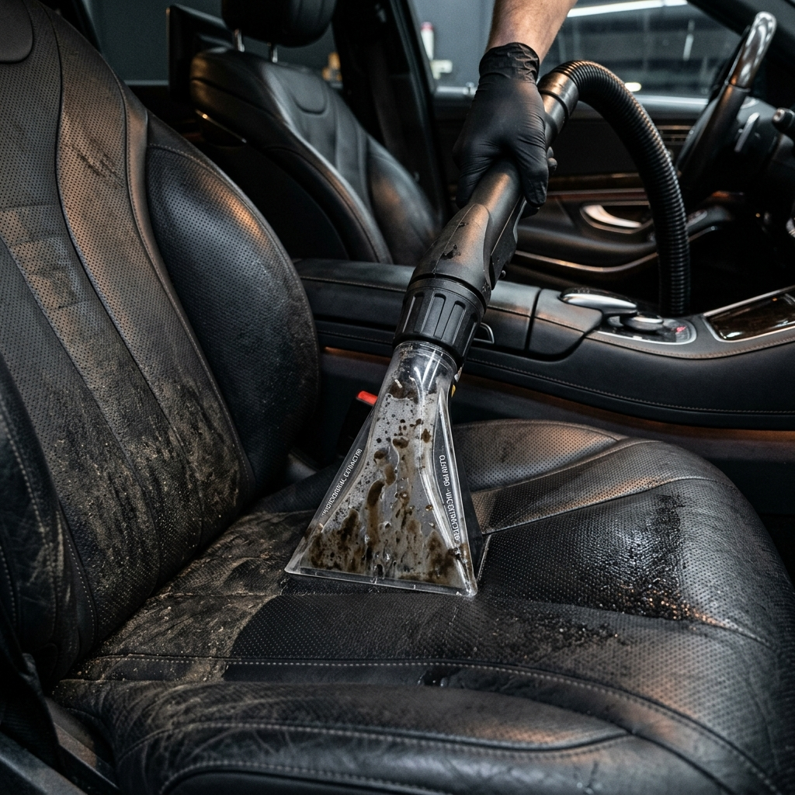
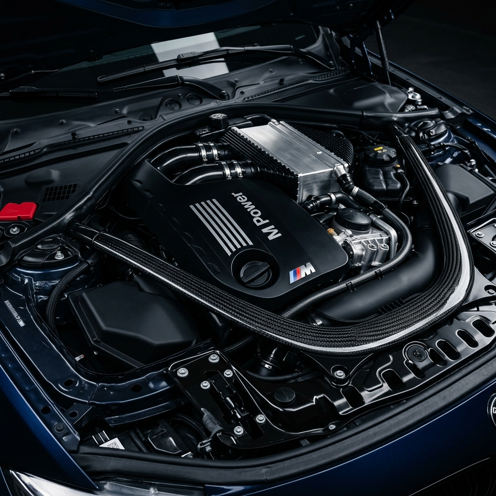

✨ Detailing Exterior

Lavado Base Premium
No es un simple lavado. Utilizamos la técnica de los dos cubos y un pre-lavado con "Snow Foam" (espuma activa) que encapsula y levanta la suciedad sin frotar la pintura.
- ✓ Uso de champú PH neutro.
- ✓ Limpieza detallada de rines y llantas.
- ✓ Secado con toallas de microfibra premium y aire a presión para evitar microarañazos (swirls).
Pulitura y Corrección de Pintura
Devolvemos el brillo tipo espejo a tu vehículo eliminando rayones superficiales, marcas de agua y la opacidad del barniz mediante procesos mecánicos avanzados.
- 1 Paso: Abrillantado ligero para pinturas en buen estado. Mejora el brillo en un 60%.
- 2 Pasos: Corrección media + Abrillantado. Elimina hasta un 80% de defectos.
- 3 Pasos: Corrección Severa + Refinado + Abrillantado. Restauración completa tipo exhibición.


Ceramic Coating
Una armadura líquida de cuarzo o SiO2 que se adhiere a nivel molecular con el barniz del vehículo, creando una capa cristalina de dureza extrema.
- ✓ Efecto hidrofóbico extremo (repela agua y suciedad).
- ✓ Protección contra rayos UV, evitando que la pintura se destiña.
- ✓ Resistencia química contra heces de aves y savia de árboles.
- ✓ Facilita enormemente los lavados futuros.
🛋️ Interior, Tapicería y Motor
Limpieza Interna Profunda Extrema
Llegamos a los rincones que un lavado tradicional nunca alcanza. No solo aspiramos, descontaminamos todo el habitáculo del vehículo.
- ✓ Desmontaje de butacas y asientos para acceso total.
- ✓ Limpieza de plásticos, tableros y consolas con pinceles de cerdas suaves.
- ✓ Acondicionamiento de plásticos para protección UV (sin acabado grasoso).
- ✓ Desodorización y eliminación de bacterias.


Tratamiento de Tapicería
Procesos especializados dependiendo del material de tus asientos para restaurarlos a su estado de agencia.
-
Tapicería de Tela:
Lavado por inyección y extracción. Disparamos limpiador profundo en la tela y lo aspiramos inmediatamente junto con la suciedad incrustada, ácaros y manchas rebeldes. -
Tapicería de Cuero:
Limpieza segura con cepillos de cerdas de caballo para limpiar los poros del cuero sin dañarlo, seguido de un acondicionador premium que devuelve la flexibilidad, el olor original y evita cuarteamientos.
Limpieza Estética de Motor
Un motor limpio no solo se ve espectacular, sino que funciona a temperaturas más frescas y permite detectar fugas fácilmente.
- ✓ Aislamiento de componentes eléctricos y tomas de aire sensibles.
- ✓ Uso de desengrasantes dieléctricos seguros.
- ✓ Limpieza a detalle con pinceles.
- ✓ Acondicionamiento de plásticos y mangueras para un acabado "como nuevo".
